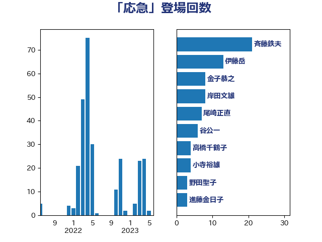

単語「応急」

| 斉藤鉄夫 | 公明党 | 21 回 |
| 伊藤岳 | 日本共産党 | 13 回 |
| 金子恭之 | 自由民主党 | 8 回 |
| 岸田文雄 | 自由民主党 | 8 回 |
| 尾崎正直 | 自由民主党 | 7 回 |
| 谷公一 | 自由民主党 | 6 回 |
| 高橋千鶴子 | 日本共産党 | 4 回 |
| 小寺裕雄 | 自由民主党 | 4 回 |
| 野田聖子 | 自由民主党 | 3 回 |
| 進藤金日子 | 自由民主党 | 3 回 |
| 輿水恵一 | 公明党 | 3 回 |
| 足立敏之 | 自由民主党 | 3 回 |
| 小林茂樹 | 自由民主党 | 3 回 |
| 古川元久 | 国民民主党 | 3 回 |
| 古川俊治 | 自由民主党 | 3 回 |
| 伊東信久 | 日本維新の会 | 3 回 |
| 鈴木敦 | 国民民主党 | 2 回 |
| 西銘恒三郎 | 自由民主党 | 2 回 |
| 若松謙維 | 公明党 | 2 回 |
| 渡辺創 | 立憲民主党 | 2 回 |
| 林芳正 | 自由民主党 | 2 回 |
| 本田顕子 | 自由民主党 | 2 回 |
| 後藤茂之 | 自由民主党 | 2 回 |
| 岸真紀子 | 立憲民主党 | 2 回 |
| 山本博司 | 公明党 | 2 回 |
| 小里泰弘 | 自由民主党 | 2 回 |
| 寺田稔 | 自由民主党 | 2 回 |
| 安江伸夫 | 公明党 | 2 回 |
| 大野泰正 | 自由民主党 | 2 回 |
| 吉川沙織 | 立憲民主党 | 2 回 |
| 佐藤正久 | 自由民主党 | 2 回 |
| 中村裕之 | 自由民主党 | 2 回 |
| 鰐淵洋子 | 公明党 | 1 回 |
| 青木愛 | 立憲民主党 | 1 回 |
| 長谷川淳二 | 自由民主党 | 1 回 |
| 野村哲郎 | 自由民主党 | 1 回 |
| 里見隆治 | 公明党 | 1 回 |
| 西村明宏 | 自由民主党 | 1 回 |
| 萩生田光一 | 自由民主党 | 1 回 |
| 羽田次郎 | 立憲民主党 | 1 回 |
| 美延映夫 | 日本維新の会 | 1 回 |
| 簗和生 | 自由民主党 | 1 回 |
| 福重隆浩 | 公明党 | 1 回 |
| 福田昭夫 | 立憲民主党 | 1 回 |
| 石田昌宏 | 自由民主党 | 1 回 |
| 田村智子 | 日本共産党 | 1 回 |
| 田村憲久 | 自由民主党 | 1 回 |
| 田中健 | 国民民主党 | 1 回 |
| 浜口誠 | 国民民主党 | 1 回 |
| 沢田良 | 日本維新の会 | 1 回 |
| 永井学 | 自由民主党 | 1 回 |
| 星野剛士 | 自由民主党 | 1 回 |
| 早坂敦 | 日本維新の会 | 1 回 |
| 打越さく良 | 立憲民主党 | 1 回 |
| 庄子賢一 | 公明党 | 1 回 |
| 岬麻紀 | 日本維新の会 | 1 回 |
| 小山展弘 | 立憲民主党 | 1 回 |
| 室井邦彦 | 日本維新の会 | 1 回 |
| 大口善徳 | 公明党 | 1 回 |
| 吉良州司 | 無所属 | 1 回 |
| 古川康 | 自由民主党 | 1 回 |
| 加藤勝信 | 自由民主党 | 1 回 |
| 仁比聡平 | 日本共産党 | 1 回 |
| 中野英幸 | 自由民主党 | 1 回 |
| 中西祐介 | 自由民主党 | 1 回 |
| 中川貴元 | 自由民主党 | 1 回 |